Update: all eleven confirmed corrections below have been repaired and checked. The two source uncertainties remain unchanged and are disclosed for maintainer re-review. See the repaired comparisons. The findings and images below preserve the earlier audit; they show the previous versions.
Fresh review of all twenty birds
Original audit status before these repairs. Eleven birds have confirmed defects; two need closer source tracing. Seven have no additional definite defect observed in this pass. This supersedes the earlier overall visual approval.
The Kookaburra perch correction remains sound. Other findings include original claws and feather tips removed by masks, broken perch contact, and retained paper or scenery. At the time of this archived audit, artwork files were unchanged and the revision had not been published. These statements describe the original audit, not the current revision status.
These archived comparisons show the defects before correction; use the updated repair page for current results. Click any image for its full closeup. Corrections should use the original historical scans and conventional masks.
Twenty-bird gallery · Complete audit record
Brown Thornbill
Correction needed
Restore the original rear toe/claw detail. The current mask removes part of the grip and leaves a detached curved hook.
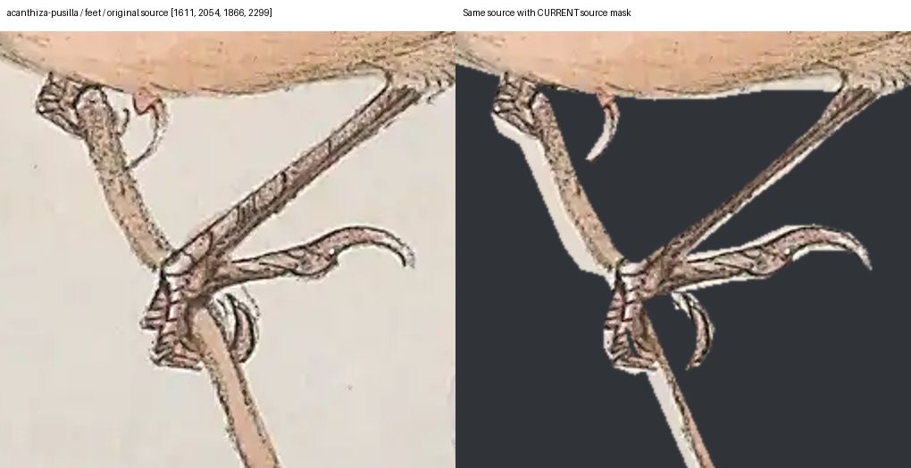
Additional closeup 1
Exact image reviewed
1079cdb12466fb3a11224393b78ddf8be8e0e22f7640833fa1ef9bcbd67b7b43Red Wattlebird
Correction needed
Restore the smaller original inner claw and the pale drawn tail-feather tips. The current mask removes the claw and cuts several genuine feather tips into angular steps.
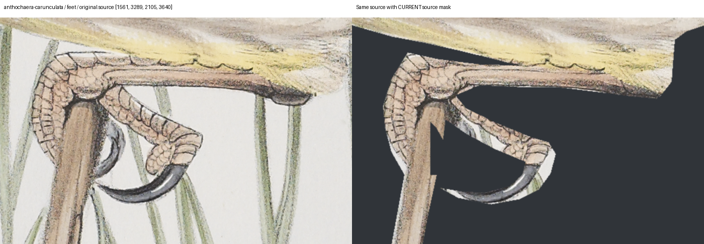
Additional closeup 1 Additional closeup 2 Additional closeup 3
Exact image reviewed
f86ad389fd3f75cefb0fee647699cf8c4fead357cb1d2c31f712a2ae7f8a5311Olive-backed Oriole
Correction needed
Restore the smaller original hooked claw strokes beside the twig. These were removed with the surrounding leaf/background.
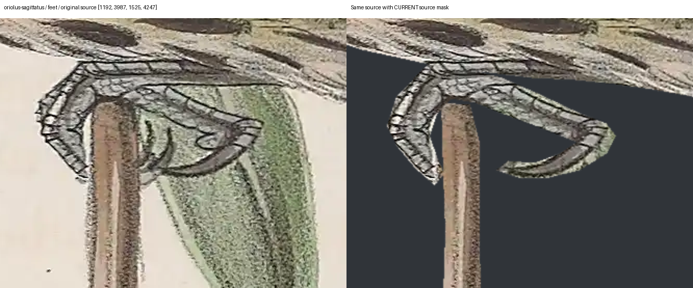
Additional closeup 1
Exact image reviewed
54bb6508ed982c4724ed5a977394a3e30eda6d42a6ca434474d824453b5c948aAustralian Magpie
Correction needed
Close the accidental angular cut through the foreground toe using the original source. The white notch is visible in the paper render.
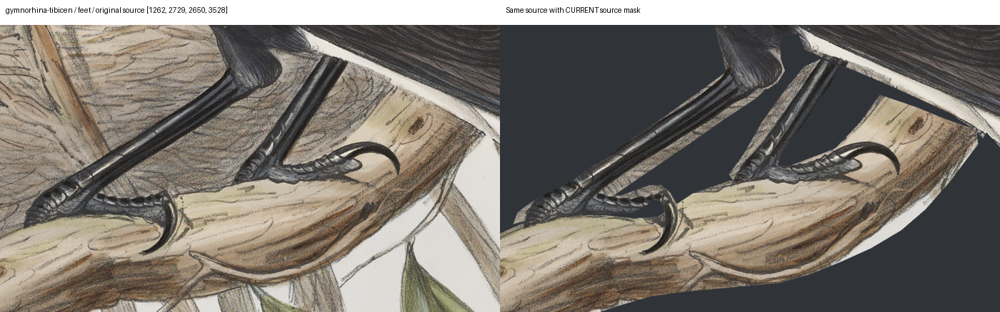
Additional closeup 1
Exact image reviewed
c59ccce49a07e2968df968565b02d91ef5aa216ca443a930efff8c24bc0b8a2dNoisy Miner
Correction needed
Restore the original perch wood beneath the forward claw. The mask cuts into the wood and leaves the claw hanging above it.
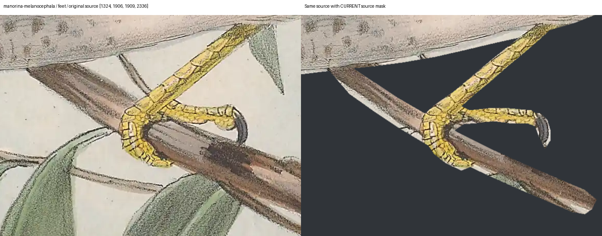
Additional closeup 1
Exact image reviewed
67f72ff8b42ad416173773c3c68ee6ebb2c58d31acfb76c5f5405246b06420f3Rose Robin
Correction needed
Restore the small original claw projecting below the perch, immediately left of the right-hand foot.
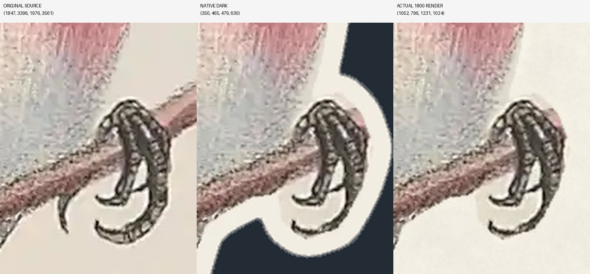
Exact image reviewed
4a9bf0fbb900b111b083c9398ed40e3c4ac87381b968143234ac2ff70a7e2165Crested Pigeon
Correction needed
Restore the original chest below the bill: a white notch has been carved into continuous plumage. Also remove the retained gray paper strip beneath the left perch.
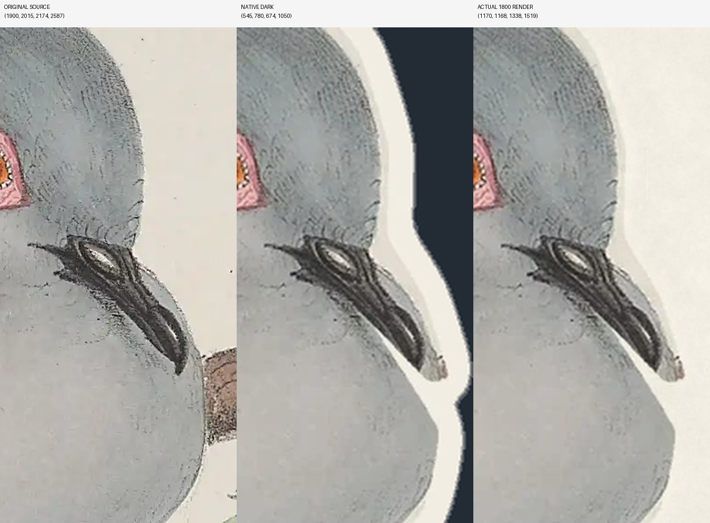
Additional closeup 1
Exact image reviewed
2e1f04ec2d5a5c656f40a8f2769e2d7e166db1d1ec793db0e37afb12963ce7eaLittle Wattlebird
Correction needed
Match or remove the retained source-paper triangle between the lower wing, gripping leg and branch. It remains slightly gray in the paper render.
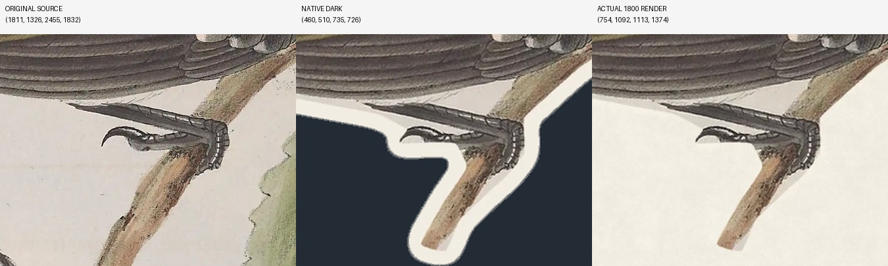
Exact image reviewed
5ecb78770980b9e913217b110497c6d7d9a526dbe6488e2fc6117c1d70ef521bMagpie-lark
Correction needed
Remove the small brown background-trunk wedge beneath the belly beside the leg. It is scenery left over from the source, not plumage.
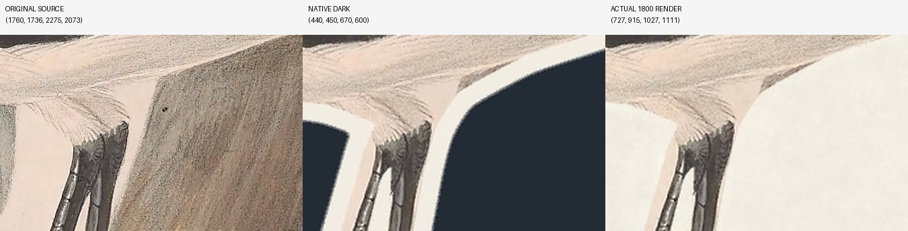
Exact image reviewed
e77093afdcaede01ba0984f519c86851f8593e6ce4b856c01f5aa6a3cb867d1cRainbow Lorikeet
Correction needed
Remove the tiny detached gray leaf-tip remnant between the rear bird belly and its right foot/perch. The larger leaf was removed, but this small tip remains visible.
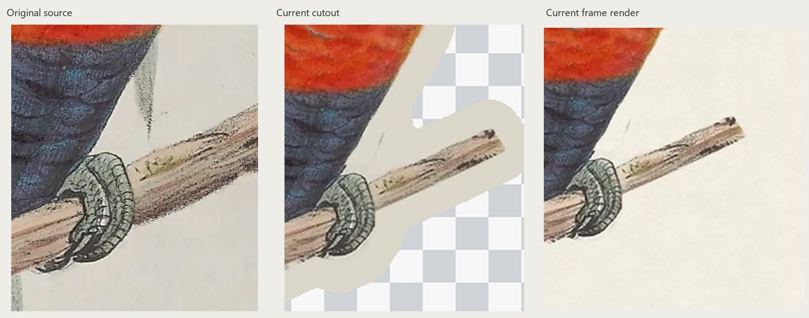
Exact image reviewed
b094299b73c1962d6ac3b24a3cf2452a52f458354cff5e4b26219f6c3eef704dGalah
Correction needed
Refine the broad gray background-paper wedge beneath the lower bird tail. Its cut boundary remains visible in the paper render; retain the fine original feather strokes above it.
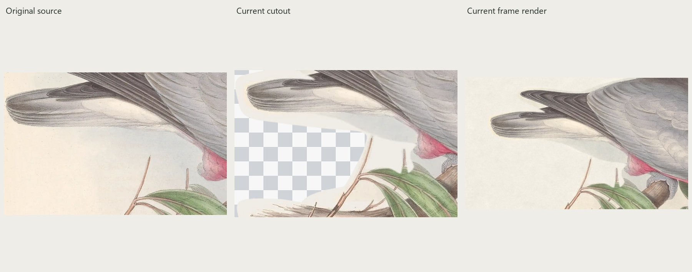
Exact image reviewed
491dbe8e3a9eeab0dda2fc71eda63f8bacf79dd7b9bdfeb1f639fbd31143e659Yellow-faced Honeyeater
Needs source verification
Trace the small dark pointed detail behind the twig to determine the full rear claw boundary. It appears to be original foot detail omitted by the mask, but needs closer source adjudication before correction.
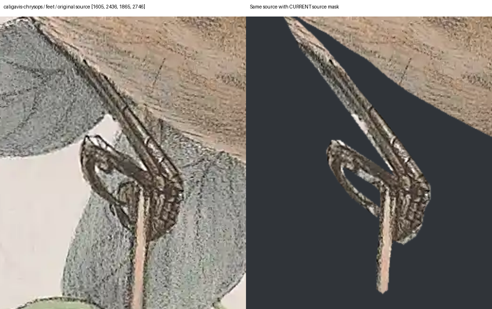
Additional closeup 1
Exact image reviewed
1e1458554f3df14ac3479d77e06ed6bf5c9e6a11b8c7e016d7fe4b41155f8afeCommon Myna
Needs source verification
Identify the tan, veined shape between wing and tail. It resembles a background leaf, but keep it intact until that identification is secure.
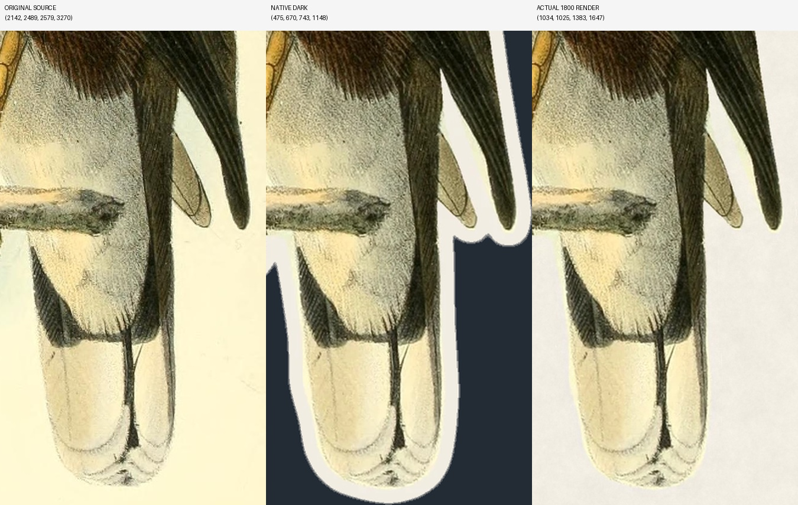
Exact image reviewed
36ac724a3ab788b4d530a9f3a33a1856861f01fc472e85ee2dba7c5808bf3a4bCoverage of all twenty
| Bird | Result | Observation |
|---|
| Brown Thornbill | must-fix | Restore the original rear toe/claw detail. The current mask removes part of the grip and leaves a detached curved hook. |
| Red Wattlebird | must-fix | Restore the smaller original inner claw and the pale drawn tail-feather tips. The current mask removes the claw and cuts several genuine feather tips into angular steps. |
| Olive-backed Oriole | must-fix | Restore the smaller original hooked claw strokes beside the twig. These were removed with the surrounding leaf/background. |
| Australian Magpie | must-fix | Close the accidental angular cut through the foreground toe using the original source. The white notch is visible in the paper render. |
| Noisy Miner | must-fix | Restore the original perch wood beneath the forward claw. The mask cuts into the wood and leaves the claw hanging above it. |
| Rose Robin | must-fix | Restore the small original claw projecting below the perch, immediately left of the right-hand foot. |
| Crested Pigeon | must-fix | Restore the original chest below the bill: a white notch has been carved into continuous plumage. Also remove the retained gray paper strip beneath the left perch. |
| Little Wattlebird | must-fix | Match or remove the retained source-paper triangle between the lower wing, gripping leg and branch. It remains slightly gray in the paper render. |
| Magpie-lark | must-fix | Remove the small brown background-trunk wedge beneath the belly beside the leg. It is scenery left over from the source, not plumage. |
| Rainbow Lorikeet | must-fix | Remove the tiny detached gray leaf-tip remnant between the rear bird belly and its right foot/perch. The larger leaf was removed, but this small tip remains visible. |
| Galah | must-fix | Refine the broad gray background-paper wedge beneath the lower bird tail. Its cut boundary remains visible in the paper render; retain the fine original feather strokes above it. |
| Yellow-faced Honeyeater | uncertain | Trace the small dark pointed detail behind the twig to determine the full rear claw boundary. It appears to be original foot detail omitted by the mask, but needs closer source adjudication before correction. |
| Common Myna | uncertain | Identify the tan, veined shape between wing and tail. It resembles a background leaf, but keep it intact until that identification is secure. |
| Laughing Kookaburra | no-additional-defect-observed | The corrected upper-perch paper ribbon is absent; original bark, toes and curved claw remain. |
| Superb Fairywren | no-additional-defect-observed | No additional definite contour defect observed. Complete wing tips, tail and carried food match the source. |
| Crimson Rosella | no-additional-defect-observed | No additional definite contour defect observed in the bird, gripping foot, rounded perch end or tail tips. |
| Tawny Frogmouth | no-additional-defect-observed | No additional definite defect observed. The tiny hook beside the belly is a genuine original claw; the visible toes and tail remain. |
| Australian Ibis | no-additional-defect-observed | No additional definite defect observed. Original reeds and faded ground are intentional scene context protecting overlapping breast plumes. |
| Sulphur-crested Cockatoo | no-additional-defect-observed | No additional definite defect observed. The complete original pair and connected tree remain intentional. |
| Yellow-tailed Black-Cockatoo | no-additional-defect-observed | No additional definite defect observed. The original connected plant scene is retained; the previously disclosed lower-resolution source remains a limitation. |
No physical display test was performed. No additional defect observed is a scoped visual result, not a guarantee of flawless segmentation.